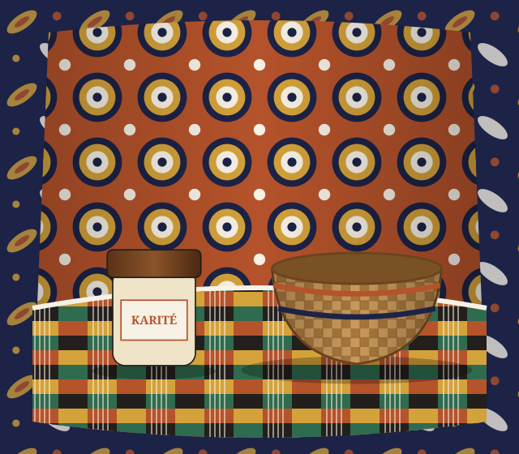

Fait main, de l'atelier à votre porte
Wax, bogolan et savoir-faire d'Afrique de l'Ouest
Vêtements en pagne, vannerie de Thiès, beurre de karité des coopératives de femmes, café Touba : des pièces choisies directement auprès de ceux qui les fabriquent.

Parcourir par univers
Cinq univers, des centaines d'ateliers du Sénégal, de Côte d'Ivoire, du Mali et du Burkina Faso.
La boutique
Nouveautés en premier. Chaque pièce est expédiée par l'artisan qui l'a réalisée.
Le juste prix, directement à l'atelier
« Avant, nos paniers passaient par trois intermédiaires avant d'arriver en Europe. Aujourd'hui, c'est nous qui fixons le prix et qui recevons le paiement. »Témoignage fictif d'une vannière de Thiès — boutique de démonstration
Livraison mondialeExpédition suivie depuis Dakar, Abidjan, Bamako et Ouagadougou
Paiement sécuriséWave, Orange Money, carte bancaire via un prestataire certifié
Artisans vérifiésChaque atelier est rencontré avant d'ouvrir sa boutique
Retours 14 joursUne pièce ne vous convient pas ? Nous la reprenons